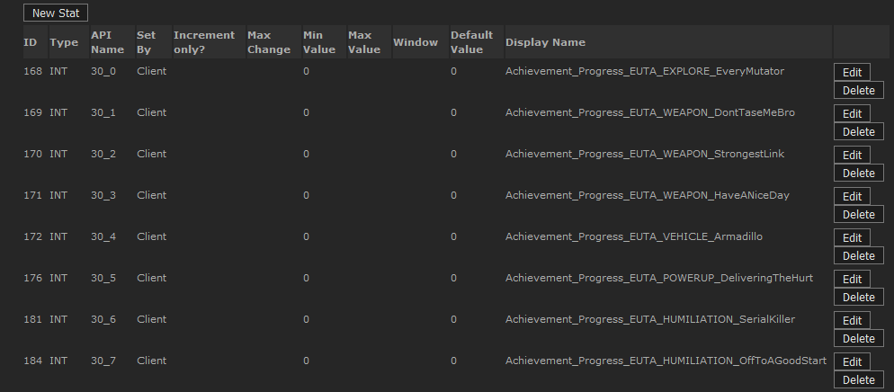

UDN
Search public documentation:
OnlineSubsystemSteamworksKR
English Translation
日本語訳
中国翻译
Interested in the Unreal Engine?
Visit the Unreal Technology site.
Looking for jobs and company info?
Check out the Epic games site.
Questions about support via UDN?
Contact the UDN Staff
日本語訳
中国翻译
Interested in the Unreal Engine?
Visit the Unreal Technology site.
Looking for jobs and company info?
Check out the Epic games site.
Questions about support via UDN?
Contact the UDN Staff
UE3 홈 > 네트워킹과 리플리케이션 > 온라인 서브시스템 스팀웍스 (OnlineSubsystemSteamworks)
온라인 서브시스템 스팀웍스 (OnlineSubsystemSteamworks)
문서 변경내역: John Barrett 작성. 홍성진 번역.
개요
Online Subsystem 의 Steamworks 구현(, 주로 통계(stat)/업적(achievement)/순위표(leaderboard)에) 대한 기술적인 설명서입니다. 온라인 서브시스템에 대한 일반적인 하이 레벨 정보에 대해서는 Online Subsystem Technical Guide KR 페이지를 참고해 주십시오. 업적, 순위표, 클라이언트/서버 통계나 기타 Steamworks 의존 기능을 구현하려면, 게임에 스팀 AppId 가 있어야 하며, Steamworks 파트너 웹사이트로의 액세스도 필요합니다.
통합 상태
OnlineSubsystemSteamworks 는 주기적으로 변화되고 있으며, 2012년 10월 부 핵심 기능은 다음과 같습니다:
- 업적 (Achievements)
- 플레이어 통계 (stats)
- 플레이어 순위표 (leaderboard)
- 서버 브라우저 광고
- 서버 브라우저 질의
- 플레이어 초대
- IP 를 통한 음성
- 로비 관리 / 광고 / 질의
- 스팀 소켓 (스팀을 통한 네트워크 연결, 자동 NAT 탐색)
- 멀티플레이어 인증
- 클라이언트 인증
- 서버 인증
- 스팀 클라이언트 없이 서버 호스팅
- 서버 브라우저 필터링이 아직, 필터링 수행을 위한 서버 질의를 요하는 서버 태그 필드를 활용하도록 최적화되어 있지 않습니다. (아마 UE3 에는 안될 듯)
- 서버 브라우저가 NAT 검색을 지원하지 않습니다. 필요하다면 스팀 로비를 대신 사용해야 합니다.
- 업적/통계/순위표는 *Engine.ini 를 통해 구성되는데, 플레이어의 .ini 파일 수정에 대해 안전하지 않습니다.
- 2011년 12월 이전 버전의 엔진에서 업데이트하는 경우 UE3 넷 호환성이 깨집니다.
- 그 이전에 구현한 OnlineSubsystemSteamworks 는 다시 테스트해야 하며, 리팩터링이 필요할 수도 있습니다.
- PS3/Mac 지원
언리얼 엔진 3 에서 스팀 통합 사용 및 구현법
스팀 클라이언트 사용하기
(콘텐츠 서버 셋업 후) 초기 게임을 구하려면
- 최신 Steam SDK 를 구한 다음, sdk/client/Steam.exe 와 sdk/client/Steam.cfg 를 로컬 폴더로 복사합니다.
- 라이선시는 '//depot/UnrealEngine3/Development/External/Steamworks/sdk/client/...' 에서 복사할 수 있습니다.
- UDK 사용자는 https://partner.steamgames.com/home 에서 등록하고 내려받을 수 있습니다.
- 'steam.cfg' 읽기전용을 해제하고 'SdkContentServerAdrs' 을 로컬 콘텐츠 서버를 실행중인 IP 로 설정합니다.
- 'Steam.exe' 를 실행합니다.
- 게임(, 우리 경우는 'Unreal Development Kit') 상의 'My games' 탭에 우클릭하고 인스톨 합니다.
- 설치가 끝나면 우클릭 후 'Launch game', 게임을 실행합니다.
(콘텐츠 서버 셋업 후) 업데이트하려면
- 스팀 클라이언트가 실행중이라면 업데이트는 자동으로 이루어집니다.
- 업데이트 확인 주기를 기다리지 못하겠다면, 스팀 클라이언트를 재시작합니다.
참고
- 업데이트를 받았는데 로컬 콘텐츠 서버에는 처음 완성된 (반복처리 불가능) 빌드가 있는 경우, 클라이언트가 헛갈릴 것입니다. 이 문제를 해결하려면 로컬 폴더에 'Steam.exe' 와 'Steam.cfg' 만 남겨두고 다시 시작합니다.
- 초기 개발 도중 이런 일이 자주 발생합니다.
스팀 콘텐츠 툴 사용하기
GUI 를 사용하는 방법과 Steam Script 를 사용하는 방법, 두 가지가 있습니다.GUI 를 통해 솔루션과 프로젝트 파일로 초기 빌드 만들기
- Publish 하려는 빌드(, 예로 'C:\Builds\UnrealEngine3' 를) 로컬에 복사합니다.
- (Steam SDK 일부인) 콘텐츠 툴, 'sdk/tools/ContentTool.exe' 을 실행합니다.
- 'New Solution' 버튼을 누릅니다.
- 'Next' 를 누릅니다.
- Solution 부분: '솔루션 이름' (UTGame) 을 입력하고, 위치는 'C:\SteamGame' 로 합니다.
- 'Next' 를 누릅니다.
- Application 부분: '어플리케이션 이름' (GUI 에 나타나는 것은 'Unreal Development Kit') 을 입력하고, File Delivery 는 'Loose Files' 이며 'Application ID' 는 13260 입니다.
- 'Next' 를 누릅니다.
- Depot 부분: Name 은 'UTGame', Type 은 'Content', 'Project Location' 은 'C:\SteamGame', 'Depot Location' 은 'C:\SteamGame\Depot', 'Depot ID' 은 13261 입니다.
- 'Next' 를 누릅니다.
- <root> 오른쪽의 리스트박스 항목에 클릭한 다음 'C:\Builds\UnrealEngine3' 를 입력합니다.
- 'Finish' 를 누릅니다. (프로젝트에 추가하기 위해 찾은 파일이 나열됩니다. OK 를 누르면 디포와 동기화됩니다)
- GUI 좌상단 근처의 'Solution Properties' 버튼을 클릭합니다. 'Solution Explorer' 글자 바로 아래 있습니다.
- 트리 뷰를 펼칩니다. 'Launch Options -> Label = Default -> Command line = Unreal Development Kit'
- 우클릭하고 명령줄을 'Binaries\Win32\UDKGame.exe' 로 바꿉니다.
- 그 창을 닫고, 물어오면 저장합니다.
- 'Build' 툴바 버튼을 클릭합니다. (시간이 약간 걸립니다)
- 이제 'C:\SteamGame\Depot' 에 '13261_0.dat', '13261_0.blob', 'UTGame.depot' 가 들어있을 것입니다. (appid_version.dat 와 appid_version.blob 입니다.)
- Publish 메뉴의 'Publish to Local Testing Server' 를 선택합니다. '13261_0.dat', '13261_0.blob', 'ContentDescriptionDB.xml' 를 로컬 서버에 복사합니다.
- 콘텐츠 서버를 실행합니다.
Steam Script 를 통해 새 버전 만들기
- DOS 창을 띄웁니다.
- '//depot/UnrealEngine3/Development/External/Steamworks/sdk/tools/ContentTool.com' /verbose /console /filename '//depot/UnrealEngine3/UDKGame/Build/Steam/SteamMakeVersion.smd' 를 실행합니다.
- 새로운 파일을 'C:\SteamGame\Depot' 에서 'C:\Steam\DepotRoot' 로 복사합니다.
- 'C:\SteamGame\ContentDescriptionDB.xml' 에서 'C:\Steam\DepotRoot' 로 복사합니다.
- 콘텐츠 서버가 업데이트를 감지할 수 있도록 중지한 후 재시작합니다.
참고
- 업데이트 과정은 빌드 시스템에 자동화되어 있습니다. 자세한 것은 //depot/UnrealEngine3/Development/Builder/Scripts/Build/SteamVersion.build 를 확인해 보십시오.
- .sts 와 .spj 파일을 수정할 때는 별 것 아닌 것 같아 보이는 변화도 문제를 일으킬 수 있으니 매우 주의하시기 바랍니다. 상대 경로도 마찬가지입니다. 문제가 생길 수 있으니 건드리지 마십시오.
스팀 콘텐츠 서버 실행하기
콘텐츠 서버를 실행하는 방법은 두 가지, 명령줄과 서비스를 통한 방법이 있습니다.명령줄에서
- DOS 창을 띄웁니다.
- '//depot/UnrealEngine3/Development/External/Steamworks/sdk/tools/contentserver/contentserver.exe' /verbose /DepotPath 'C:\SteamGame\LocalTestServer' 를 실행합니다.
- 디버그 결과가 주욱 지나가고 나서, 맨 마지막에 13261_0 가 보입니다.
- 이제 스팀 클라이언트가 접속하여 이 빌드를 내려받을 수 있습니다.
서비스로
- 'C:\SteamGame\LocalTestServer' 를 'C:\Steam\DepotRoot' 로 옮깁니다. (ContentServerCfg.txt 를 사용하여 서비스의 디포 경로를 설정하지 않았을 경우에 한합니다. 아래 참고)
- DOS 창을 띄웁니다.
- '//depot/UnrealEngine3/Development/External/Steamworks/sdk/tools/contentserver/contentserver.exe' /install 를 실행합니다. (서비스가 자동으로 시작됩니다)
- 이제 스팀 클라이언트가 접속하여 이 빌드를 내려받을 수 있습니다.
참고
- 일반적으로 콘텐츠 서버는 매우 잘 돌아가며, 전형적인 네트워크 재앙 다수를 매끄럽게 처리합니다.
- 알아둘 예외는 두 가지 있습니다:
- 콘텐츠 서버는 새 버전을 감지하지 않으며, 새 버전을 등록하려면 서비스를 재시작해야 합니다.
- 서비스로 실행할 때는 디포 위치를 명령줄로 설정할 수 없습니다. 서비스로 실행할 때는, ContentServer.exe 와 같은 디렉토리에 있는 ContentServerCfg.txt 파일을 통해서만 설정할 수 있습니다. 거기에 설정된 값이 없을 때는, \Steam\DepotRoot 디폴트 값이 사용됩니다 (이 경로는 볼륨의 루트에 상대적입니다). 이 파일의 문법은 UE3 .ini 파일과 비슷합니다. 예를 들어 디포 위치를 "\Steam\DepotRoot" 에서 "\LocalContentServer" 로 바꾸려면, ContentServerCfg.txt 에는 다음 두 줄이 들어가면 됩니다:
[ClientContent] DepotRootPath = "\LocalContentServer"
게임에서 스팀 사용하기
게임을 실행시킬 때 스팀 클라이언트를 실행시켜 두기만 하면 모든 스팀 기능에 접근할 수 있습니다. 스팀 클라이언트가 실행중이지 않으면, 네트워킹 레이어 내부적으로는 (기본적인 OnlineSubsystemPC 함수성을 갖고 있는) 공용 온라인 서브시스템으로 대체됩니다. 인증 시스템은 꽤나 단순합니다. 게임을 '소유' 중이지 않다면, 서버에서 플레이할 수 없습니다. 자기 게임 네트워크 접속성을 테스트하려면 Valve 에 app id 를 물어 보십시오. 'Unreal Development Kit' app id 는 모두에게 소유되어 있습니다.통계
백엔드 셋업

통계를 셋업하려면 먼저 Steamworks 백엔드를 정의해야 합니다. 이는 Steamworks 파트너 웹사이트에 있는 Game Admin 패널을 통해 접근 가능합니다. 통계 항목 API Name 은 'ViewId_ColumnId' (예로 2_0)을 따라야 하며, ViewId 는 특정 통계 테이블을 식별하는 데 사용되는 고유 수치, ColumnId 는 그 통계 테이블의 각 항목을 식별하는 데 사용되는 수치가 들어갑니다. 'Type' 는 INT/FLOAT (AVGRATE 는 미시험/미지원) 중 하나이며, 통계 항목은 클라이언트나 게임 서버 중 하나를 통해 설정할 수 있으나, 둘 다에서는 안됩니다.게임플레이 통합
통계 데이터는 OnlineStatsRead 및 OnlineStatsWrite 클래스의 서브클래스를 사용하여 관리되는데, 이들은 통계 데이터의 읽고/쓰기 위한 콘테이너로 사용되는 통계 테이블의 레이아웃을 정의합니다.OnlineStatsRead/OnlineStatsWrite 셋업
OnlineStatsRead 서브클래스에서 통계 테이블을 셋업하려면, 그 ViewId 를 백엔드 통계 테이블의 ViewId 와 그 테이블에 대한 각 통계 항목 ColumnId 를 ColumnIds 배열에 일치시켜야 합니다. OnlineStatsWrite 서브클래스의 경우, 통계 테이블 ViewId 는 ViewIds 배열에 추가시켜야 하며, Properties 배열은 각 통계 항목 ColumnId 에 대한 요소 구성을, 백엔드 통계 값 유형에 일치하는 데이터를 포함하여 갖고 있어야 합니다. 예로:
class YourOnlineStatsWrite extends OnlineStatsWrite
defaultproperties
{
Properties.Add((PropertyId=2,Data=(Type=SDT_Int32,Value1=0)))
}
통계 읽기
통계 테이블 값을 구해오기 위해, AddReadOnlineStatsCompleteDelegate() 를 사용하여 콜백을 셋업하고, ReadOnlineStats() 를 호출하여 읽고자 하는 플레이어 통계의 UniqueId 와, OnlineStatsRead 서브클래스의 인스턴스를 전달해 줍니다. 콜백이 되돌아오면, 플레이어 통계 전부가 OnlineStatsRead 오브젝트 속으로 읽혀 들어온 것이고, 콜백을 비우기 위해 ClearReadOnlineStatsCompleteDelegate() 을 호출해야 할 것입니다.통계 쓰기
플레이어에 대한 통계 값을 쓰기 위해서는, OnlineStatsWrite 서브클래스의 인스턴스를 만들고, SetIntStat() 같은 함수를 사용하여 통계 값을 설정한 다음 (OnlineStatsWrite.uc 참고), WriteOnlineStats() 를 사용하여 통계 데이터를 캐시하고 FlushOnlineStats() 를 통해 백엔드로 흘려보냅니다. 넘기기 완료(되거나 실패)시 콜백을 받으려면 AddFlushOnlineStatsCompleteDelegate() 을 사용하고, ClearFlushOnlineStatsCompleteDelegate() 로 콜백을 설정/비웁니다.게임 서버 통계
게임 서버 통계란 게임 서버만이 작성할 수 있는 플레이어 통계로, Engine.ini 의 *GameServerStatsMappings 배열을 사용하여 구성해야 하며, OnlineStatsWrite ViewId 의 것을 게임 서버 통계에 매핑합니다. 이 기능의 정상 작동을 위해서는, 백엔드에서 통계 값에 대한 Set By 필드가 GS 로 설정되어 있어야 합니다.디버깅/개발
통계를 리셋시키려면, ResetStats 함수를 사용하십시오.업적
백엔드 셋업
 업적(Achievement)을 셋업하려면 먼저 Steamworks 백엔드로 들어가야 하는데, 이는 Steamworks 파트너 웹사이트 상의 Game Admin 패널을 통해 접근 가능합니다.
업적에는 꼭 최소한 아이콘이 설정되어 있어야 하며, 클라이언트에서 설정해야 하고, (가급적) 고유 API 이름을 주거나, 아니면 'Achievement_#' 식으로 # 에는 0 부터 시작하는 순차 이름을 지어도 됩니다.
업적(Achievement)을 셋업하려면 먼저 Steamworks 백엔드로 들어가야 하는데, 이는 Steamworks 파트너 웹사이트 상의 Game Admin 패널을 통해 접근 가능합니다.
업적에는 꼭 최소한 아이콘이 설정되어 있어야 하며, 클라이언트에서 설정해야 하고, (가급적) 고유 API 이름을 주거나, 아니면 'Achievement_#' 식으로 # 에는 0 부터 시작하는 순차 이름을 지어도 됩니다.
업적 통계
진행상황 추적 용도로 업적에 대한 통계 항목 역시 만드는 것이 좋습니다. 이 통계 값은 온라인 서브시스템을 통해 업데이트될 것입니다. 통계는 INT 형이어야 하며, 그 API 이름은 'ViewId_ColumnId' 명명 규칙을 따라야 합니다 (위의 통계 부분 참고). 여기서 ColumnId 는 AchievementId 로 직접 매핑됩니다. (아래 온라인 서브시스템 부분 설명 참고) 백엔드 업적 페이지에서 이 통계 항목을 업적에 연결시킬 수 있으며, 업적 풀기에 필요한 진행상황을 지시하기 위해 Min 과 Max 를 설정합니다.온라인 서브시스템 셋업
업적은 OnlineSubsystemSteamworks.uc 내 AchievementMappings 배열을 통해 스팀 백엔드에 연결되어 있으며, 이는 DefaultEngine.ini 또는 DefaultEngineUDK.ini 를 통해 환경설정되는 것입니다.게임플레이 통합
업적을 처리하는 방법은 두 가지가 있는데, 하나는 온라인 서브시스템 함수를 통해 수동으로 처리하는 것이고, 다른 하나는 업적 통계 업데이트를 통해 자동으로 기능하도록 놔두는 방법입니다. (후자를 추천하며, '자동 진행/풀기' 및 '추적 진행' 부분을 참고하시기 바랍니다).수동 진행/풀기
업적을 풀기 위해서는 UnlockAchievement() 함수를 사용하면 되며, 'AchievementId' 는 AchievementMappings 배열의 그 id에 대해 지정된 업적 API 이름으로 매핑됩니다. AchievementMappings 가 구성되지 않은 경우 UnlockAchievement() 는 API Name 을 Achievement_# 으로 가정하며, # 는 AchievementId 로 대체됩니다. 성공/실패 업적 풀기 통지를 받으려면, UnlockAchievement 호출 이전 통지 콜백을 구성하기 위해 AddUnlockAchievementCompleteDelegate 를 사용하고, 콜백을 비우기 위해 ClearUnlockAchievementCompleteDelegate 를 사용합니다. 이는 자동 업적 풀기에도 마찬가지로 작동할 것이나, 시험을 거치진 않았습니다. 업적 진행을 표시하려면 DisplayAchievementProgress() 를 호출합니다. AchievementId 파라미터는 UnlockAchievement() 와 똑같은 규칙을 따릅니다.자동 진행/풀기'
온라인 서브시스템이 자동으로 업적을 풀게 하려거나, 업적 진행을 자동으로 표시하게 하려는 경우, 반드시 백엔드 상에서 통계를 업적에 연결해 줘야 하며, 반드시 AchievementMappings 안에서 'ViewId' 와 'MaxProgress' 값을 구성해 줘야 합니다. 'AchievementMappings' 안에서, 'ViewId' 는 백엔드 상의 업적 통계의 ViewID에 일치해야 하며, 'MaxProgress' 는 업적을 풀 시점을 나타내고, 'ProgressCount' 는 진행 업데이트 표시까지 필요한 진행량을 정하며, 'bAutoUnlock' 은 자동 풀기를 제어합니다.추적 진행
스팀 백엔드 상의 통계에 업적을 연결시킨 경우, 통계 시스템을 사용하여 업적 진행을 추척할 수도, 옵션을 통해 자동으로 업적 진행을 풀고 표시할 수도 있습니다. 통계 시스템 구성 및 사용법에 대한 것은 위의 통계 부분을 참고하시고, ColumnId 는 업적 통계에 대한 AchievementId 에 일치해야 합니다. 자동 업적 진행/풀기를 켜 둔 경우, 이는 입력 업적 통계 데이터를 사용해서 'FlushOnlineStats' 에 의해 트리거됩니다.디버깅/개발
업적을 리셋시키려면 ResetStats 함수를 사용하여, 참을 전달시킵니다. 그러나 이 방법은 통계와 업적이 둘 다 리셋됩니다.순위표
백엔드 셋업
순위표(Leaderboard)는 Steamworks 파트너 웹사이트의 Game Admin 패널을 통해서, 또는 CreateLeaderboard 함수를 사용해서 셋업할 수 있습니다. (이 함수는 오직 개발 목적으로, 릴리스 코드에는 사용하지 말아야 합니다.) 지정된 순위표 이름은 스팀 순위표 페이지에 표시되므로 사람이 읽을 수 있는 순위표 이름이 될 것이며, 현재는 Valve 에 하드코딩되므로 현지화되지 않습니다.온라인 서브시스템 셋업
순위표는 LeaderboardNameMappings 배열에 의해 백엔드에 연계됩니다. LeaderboardName 은 순위표를 식별하며, 백엔드 상에 사람이 읽을 수 있는 순위표 이름에 일치해야 합니다. ViewId 는 순위표를 특정 통계 테이블에 매핑합니다.게임플레이 통합
통계 시스템 구성 및 사용법에 대한 것은 위의 통계 부분을 참고하십시오. 순위표는 통계 시스템을 사용하여 읽고 쓰며, 클라이언트에서만 쓸 수 있습니다. OnlineStatsRead 및 OnlineStatsWrite 서브클래스는 평소대로 구성되는데, 순위표 점수를 담을 열을 선택해야 한다는 점이 다릅니다. OnlineStatsWrite 서브클래스에서, RatingId 는 순위표 점수에 사용되는 ColumnId 를 식별하는 데 사용되며, OnlineStatsRead 서브클래스는 기타 부가적인 것을 구성해 줄 필요가 없습니다.읽기
순위표 데이터를 읽으려면 'ReadOnlineStats()' 대신 ReadOnlineStatsByRank() 및 ReadOnlineStatsByRankAroundPlayer() 를 사용하십시오. 각 플레이어 계급/이름/UniqueId 를 OnlineStatsRead 오브젝트의 Rows 배열에서 구해올 수 있으며, 순위표 열에는 플레이어 점수가 포함됩니다.쓰기
순위표 데이터를 쓰려면 평소처럼 WriteOnlineStats() 와 FlushOnlineStats() 를 사용하면 되는데, 선택된 순위표 열에 따라 순위표 점수를 업데이트합니다.부가 함수성
순위표 정보
순위표에 관한 부가 정보를 구하려면 (SortType, DisplayFormat, LeaderboardSize), 순위표 상에 읽고/쓰기 작업을 최소 한 번 한 이후 LeaderboardList 배열에 접근하면 됩니다. LeaderboardSize 는 순위표를 읽어오거나 써줄 때마다 매번 업데이트됩니다.강제 업데이트
디폴트로 순위표 점수를 쓸 때, 최고값이 유지됩니다. 현재 순위표 점수가 10 일 때 점수를 5 로 설정하면, 실패합니다. 순위표 점수를 강제로 업데이트시키는 것도, LeaderboardList 안의 순위표에 대해 UpdateType 를 LUT_Force 로 설정하면 되며, 그 안에 순위표가 없는 경우라면 항목을 추가한 다음 LeaderboardName 및 UpdateType 만 지정해 줘도 됩니다.서버 광고/질의
서버를 광고할 때, Game.ini 의 *[Engine.GameReplicationInfo] 아래 ServerName 이 설정되었는지 확인하세요. 설정되지 않은 경우, 코드는 디폴트 서버 이름을 사용합니다.
온라인 광고/질의
Valve 마스터 서버에 있는 게임 서버를 광고하려면, Valve 에 게임 appid 를 알려 활성화시켜 줘야 하며, 게임에 고유 ProductName 키를 제공해 주기도 할 것입니다.
ProductName
ProductName 값은 스팀 내부적으로 귀사의 게임에 대한 게임 서버를 광고하는 데 사용됩니다. 그리고 소스 권한이 있는 라이선시의 경우 OnlineSubsystemSteamworks.h 의 STEAM_PRODUCT_NAME define 에 들어 있을 것입니다. UDK 만 사용하며 고유 appid 가 있는 라이선시의 경우, ProductName 은 DefaultEngineUDK.ini 의 [OnlineSubsystemSteamworks.OnlineSubsystemSteamworks] 아래 있으며, 다음과 같습니다:ProductName=unrealdk
GameDir
게임 셋업에 또 하나 중요한 값은 Engine.ini 의 *GameDir 값입니다. 이 값은 게임에 고유하게 주어지는 중요한 값으로, Valve 마스터 서버에서 귀사의 게임을 필터링하는 데 사용되는 값이기 때문입니다. 게임에 고유한 GameDir 값을 지정하지 않으면, 서버 브라우저는 Valve 마스터 서버의 모든 서버를 통해 모든 게임에서 를 대상으로 질의를 합니다.UDK 를 통한 광고
고유 appid 가 없는 UDK 개발자는 UDK 자체를 통해 서버 광고를 할 수 있습니다. 여기서 딱 한가지 중요한 점은, 프로젝트에 고유하게 GameDir 값을 구성해야 서버 브라우저 질의에 다른 UDK 전용 프로젝트의 서버가 반환되지 않습니다. 비상용 UDK 개발자만 UDK 자체를 통해 광고해야 하며, 상용 개발자는 Valve 에 연락하여 고유 appid 와 ProductName 을 얻으셔야 합니다.LAN 광고/질의
| 플랫폼 | 마스크 |
|---|---|
| Windows | 0x00000001 |
| Windows dedicated server | 0x00000002 |
| Xbox360 | 0x00000004 |
| PS3 | 0x00000008 |
| Linux | 0x00000010 |
| MacOSx | 0x00000020 |
스팀 로비
로비 시스템은 디폴트로 꺼져 있으며, OnlineSubsystemSteamworks\Globals.uci 에서 켤 수 있습니다. (UScript 와 C++ 리컴파일이 필요합니다.) 구현 세부사항은 OnlineLobbyInterfaceSteamworks.uc\UOnlineLobbyInterfaceSteamworks.cpp 를 참고하세요. globals.uci 를 변경할 때, .uc 파일도 열고 저장해 주세요. uci 파일에 리컴파일이 필요한지 확인하지 않는 make 커맨드렛 버그가 있기 때문입니다.
멀티플레이어 인증
스팀은 클라이언트와 서버 SteamID 확인, 클라이언트의 게임 소유 여부, VAC 금지되지는 않았는지, 다른 서버에서 이미 인증되지는 않았는지 등의 확인을 위한 멀티플레이어 인증을 지원합니다. 이는 일반화된 온라인 서브시스템 인터페이스 OnlineAuthInterface 를 통해 제어되며, (서버 인증을 클라이언트측에서 처리하기 위한) 일반적 인증 로직은 AccessControl 에 구현되어 있습니다. 이는 *Game.ini 환경설정 파일의 [Engine.AccessControl] 아래 다음과 같은 세팅으로 노출되어 있습니다:
- bAuthenticateClients: 클라이언트 인증 게임 서버가 참여하는 클라이언트를 인증할 것인가 입니다. (클라이언트는 인증이 완료될 때까지 PreLogin 에서 참가를 막고 있다가, 인증에 실패하면 추방합니다.)
- bAuthenticateServer: 서버 인증 클라이언트가 게임 서버를 인증할 것인가 입니다. (클라이언트 인증 완료후 발생합니다.)
- bAuthenticateListenHost: 리슨 호스트 인증 리슨 서버를 호스팅하는 플레이어를 자체 서버로 인증할 것인지 입니다.
- MaxAuthRetryCount: 최대 인증 재시도 횟수 플레이어에 대한 인증을 최대 몇 번까지 재시도할지 입니다.
- AuthRetryDelay: 인증 재시도 지연 인증을 재시도하기까지 기다릴 지연 시간입니다.
인증과 통계
백엔드에 GS (GameServer) 로 설정된 통계 항목은, 게임 서버만이 플레이어에 대해서 이 통계를 작성할 수 있으며, 그 플레이어는 서버에 인증되어 있어야 합니다. 아니면 그 플레이어에 대한 GS 통계는 작성될 수 없습니다.스팀 소켓
Steamworks 는 NAT 탐색을 자동으로 처리해 주는 네트워킹 인터페이스를 제공, 이를 통해 SteamId 를 기반으로 서버에 접속할 수 있습니다. 이 기능은 OnlineSubsystemSteamworks 에 커스텀 넷 드라이버 형태로 구현되어 있습니다. 이 기능을 켜려면 DefaultEngine.ini 를 열고 [Engine.Engine] 아래 다음 부분을:
NetworkDevice=IpDrv.TcpNetDriver
NetworkDevice=OnlineSubsystemSteamworks.IpNetDriverSteamworks
서버 시작하기
스팀 소켓 넷 드라이버가 설정되었을 때, 스팀 소켓을 켜려면 명령줄에 ?steamsockets 를 붙여 서버를 실행시켜야 합니다. 이 옵션을 붙이지 않으면 고정 IP 연결이 사용됩니다. 스팀 소켓과 함꼐 서버가 시작될 때마다, 새로운 SteamID 가 생성되며, 으는 서버 로그파일에 기록되고, UnrealScript 에서 OnlineAuthInterface.GetServerUniqueId 를 통해 구할 수 있습니다. 이는 서버에 연결하기 위해 사용해야 하는 UID 이나, 고정 IP 로 서버에 접속을 시도하는 클라이언트는 SteamId 주소 서버로 자동 재전송됩니다. 스팀 소켓과 함께 서버가 시작되면, 서버 브라우저에 서버의 SteamId 를 SteamServerId 키로 광고하기도 합니다. UScript 에서 여기에 접근하려면, OnlineGameSettings 서브클래스에 같은 이름의 데이터바인딩 변수를 주어야 합니다. 예제는 UTGameSettingsCommon 을 참고하세요.서버에 연결하기
스팀 소켓을 사용하여 서버에 연결하려면, 클라이언트는 연결 URL 에 서버 SteamId 를 지정해야 하며, SteamId URL 은 Steam.# 형식으로 지정됩니다. # 가 SteamId 이며, Steam.90083795756409860 와 같은 식입니다. 예를 들어 서버 연결을 위한 콘솔 명령은 다음과 같습니다: open steam.90083795756409860 서버의 고정 IP 로 연결을 시도하는 클라이언트는 (보통 IP 에 NAT 문제가 없는 경우) 서버에 의해 서버의 SteamId 주소로 재전송됩니다.스팀 소켓 강제
초대
OnlineSubsystemSteamworks 통합에는 스팀 클라이언트 안에서나 게임내에서의 초대 전송 기능이 완벽 지원되며, '친구 참가'(join friend) 기능은 물론 스팀 클라이언트 UI 내에서 발동되는 다른 서버 참가 기능에다, 게임 자동 시작 기능까지 포함해서 지원하고 있습니다 (여기서는 이 모든 것들을 '초대'(invites)라고 통칭합니다). 이 모든 것들은 online subsystem invite 코드를 통해 처리되는데, 무엇을 통해 발동된 것인지는 무관합니다.
초대 전송
초대를 전송하는 방법은 크게 두 가지입니다. 하나는 Steam UI 를 통하는(, 보통 친구 목록의 친구에 우클릭한 다음 초대하는) 방법, 다른 하나는 온라인 서브시스템의 SendGameInviteToFriend 를 통하는 방법입니다. 스팀 소켓과 가장 호환이 잘 되는 SendGameInviteToFriend 를 추천하는데, 둘 다 작동은 합니다.친구 또는 서버 참가
Steam UI (의 친구 목록이나 스팀 커뮤니티 따위)를 통해서 친구 또는 서버에 참가 요청은, Steam UI 를 통해 발동되는 다른 모든 초대와 똑같이 간주됩니다. 실제 초대와 스팀 클라이언트 로컬에서 발동된 서버 참가를 구분할 수 있는 방법은 없습니다.초대 처리
UE3 에서 초대를 받으면 자동으로 내부 서버 브라우저 검색을 통해 초대 대상 서버를 찾습니다 (서버가 직접 질의 가능하지 않더라도 마스터 서버에 나열되어 있다면 작동합니다). 검색 결과가 반환되면 온라인 서브시스템의 OnGameInviteAccepted 델리게이트를 통해 그 결과를 전달합니다. 그게 트리거될 때 초대에 대한 정보가 들어있는 서버 검색 결과가 전달되고, 초대를 수락하기 위해서는 AcceptGameInvite 를 호출해야 합니다. AcceptGameInvite 는 자동으로 JoinOnlineGame 을 호출하며, 이는 OnJoinOnlineGameComplete 를 트리거시킵니다. 이 시점에서 GetResolvedConnectString 함수에 지정된 URL 위치의 서버에 참가하게 됩니다 (참가 URL 을 구하는 데는 그 함수를 사용하는 것이 중요한데, 그래야 스팀 소켓 주소를 사용할지 일반 IP 주소를 사용할지 자동으로 알기 때문입니다). 이미 PlayerController.uc 의 베이스 엔진 코드에서 이 모든 것들을 올바르게 처리하고 있으니, 참고삼아 보시기 바랍니다.스타트업 초대
초대와 서버 참가는 게임이 열리지 않은 스팀 클라이언트 상태에서도 가능하기때문에, 스팀이 게임을 자동으로 시작시켜 이러한 초대를 처리할 수 있습니다. 이때문에 시작시 가급적 빨리 OnGameInviteAccepted 를 후킹해 주는 것이 매우 중요합니다 (다시금, PlayerController.uc 의 베이스 엔진 코드에서 잘 처리되고 있습니다). 그래야 초대를 놓치지 않습니다. 스팀에서 실행시킬 수 없는 개발 버전에서 이 기능을 테스트하기 위해서는, 명령줄에 이렇게 붙이면 됩니다: -SteamConnectIP=127.0.0.1:7777 (서버의 공용 IP 를 지정해야 이 기능이 작동합니다.)스팀 소켓
초대 코드는 스팀 소켓에 밀접하게 묶여 있으며, 초대에도 여러가지 종류가 있기 때문에, 모든 초대가 스팀 소켓을 완벽히 지원하지는 못하고, 또 모두 NAT 탐색을 100% 지원하지는 못합니다 (스팀이 제공하는 정보의 한계 때문입니다). Steam UI 를 통해 발동되는 초대는 보통 스팀 소켓으로 접속하기에 충분한 정보를 갖고 있지 않지만, 해당 서버에 친구가 있을 경우엔 그 정보를 구해올 수 있습니다. 친구가 없는 서버로의 초대에는 IP 주소로 대신 참가 시도해 봅니다. SendGameInviteToFriend 를 통해 발동된 초대는 항상 스팀 소켓 서버에 접속하기 충분한 정보가 있습니다.스팀 소켓 강제
스팀 자동 시작
게임을 시작시 스팀 클라이언트가 실행중인지 확인할 필요가 있으면, 게임의 환경설정을 통해 스팀이 실행중이지 않으면 스팀 클라이언트를 자동으로 시작시키도록 할 수 있습니다 (그 과정에서 게임은 닫히고 스팀이 재시작시킵니다). 그렇게 셋업하려면 *Engine.ini 를 편집하여 [OnlineSubsystemSteamworks.OnlineSubsystemSteamworks] 아래 bRelaunchInSteam 를 참으로, RelaunchAppId 를 게임의 appid 로 설정합니다. 그런 다음 반드시 Binaries 내 Win32/Win64 폴더의 steam_appid.txt 를 지워야 합니다. 또 한가지, 게임이 Steam 폴더 내부(, 전형적으로는 Steam\SteamApps\common\YourGame\)에 설치되어 있어야지만 작동합니다. 게임이 스팀 외부에서 시작된 경우, 게임은 닫히고 스팀이 재시작시킵니다. (필요한 경우 스팀 클라이언트를 자동으로 시작시킵니다.)
디버깅
스팀 서브시스템 관련 문제가 생긴 경우, 가장 먼저 *Engine.ini 의 [Core.System] 아래 Suppress=DevOnline 줄을 없애 보십시오. 그러면 온라인 서브시스템 관련 로그 정보 출력량이 크게 늘어납니다. (다른 방법으로는 콘솔에 unsuppress devonline 라 쳐도 됩니다.) Steamworks API 자체내에 발생할 수도 있는 문제에 대해서는, 게임 명령줄에 -debug_steamapi 를 붙여 보면 Steam SDK 에서 발생한 에러 정보가 로그 파일에 출력됩니다. Steam client 명령줄에 -console 을 붙이시는 것 역시도, 약간의 디버그 정보를 제공하는 'Console' 탭이 스팀에 추가되므로, 도움이 될 수 있습니다.
스팀 소켓
위에 더해 스팀 소켓을 디버깅할 때, DevOnline 에 추가로 Engine.ini 에서 DevNet 억제를 해제시키는 것도 도움이 됩니다. 그리고 넷-채널 레벨에서 추적해 내려가기가 엄청 힘든 문제가 있을 경우 DevNetTraffic 억제를 해제하고, UnBuild.h 에서 SUPPORT_SUPPRESSED_LOGGING 를 1 로 강제 설정합니다. (로그파일 스팸이 엄청나지니 주의하시기 바랍니다.) 추가적으로 연결에 어려움이 있다든가 타임아웃이 발생하는 등 스팀 소켓으로 스팀 내부 디버깅을 하고자 하는 경우, 명령줄에 Steam.exe 에다 -lognetapi 를 붙이면 (호스트의 정보 로깅을 위해 필요한 작업입니다), Steam\logs\netapi_log.txt 에서 활성 소켓 관련 상세 디버깅 정보를 볼 수 있습니다.서버 브라우저
서버 브라우저를 디바깅할 때 (보통 서버가 보이지 않을 때), ServerListResponse 와 ServerRulesResponse 를 가리키는 로그를 봐야 합니다. ServerListResponse 결과는 밸브 마스터 서버로 질의한 결과로 어떤 경우에도 항상 결과를 반환합니다. ServerRulesResponse 결과는 개별 서버로 질의한 결과로, NAT, 포트 포워딩이나 다른 네트워킹 문제가 있다면 실패 할 수 있습니다. ServerListResponse 항목에 자신의 서버 IP 가 나열되어 있는 것이 보인다면, 밸브 마스터 서버에 정상 등록된 것입니다. 그러나 질의 실패 메시지에 서버 IP 가 나열된 경우, 라우터/방화벽의 포트 포워딩 관련해서 (서버상의) 환경설정이 잘못되어 있거나 일반적으로 UE3 에 관련되지 않은 다른 네트워킹 문제일 확률이 매우 높습니다. 그렇게 환경설정이 잘못되어 있으면 ServerRulesResponse 질의가 발생되지 않습니다. 자신의 서버 IP 가 (실패 이외의) ServerRulesResponse 항목에 나열된 경우는, 네트워킹 문제가 아니라 주로 광고중인 데이터 문제, 엔진 버전 불일치, UE3 내부에서 발생된 다른 문제입니다 (문제의 원인은 로그 출력물에 자세히 기록되어 있을 것입니다). 찾아볼 ServerListResponse 로그 항목:DevOnline: ServerListResponse: Got server details (index: x) ... DevOnline: Querying rules data for Internet server x.x.x.x:xxxx
DevOnline: ServerListResponse: Server 'x' failed to respond DevOnline: ServerListResponse: Server 'x' Address: x.x.x.x:xxxx
DevOnline: ServerRulesResponse: Retrieved server rule: x=y
DevOnline: This server is for a different engine version (x), rejecting.
DevOnline: ServerRulesResponse: Rules response failed for server; IP: x.x.x.x:xxxx, UID: x
드문 문제
흔한 문제
스팀 서브시스템 관련해서 흔히 맞닥뜨릴 수 있는 문제입니다.
통계가 업데이트되지 않음
흔히 통계 작성을 실패하게 만드는 원인입니다.게임 서버 통계
플레이어에 대한 게임 서버 통계를 작성중이라면, 클라이언트가 서버에 올바르게 인증되어 있는지 확인해야 합니다. 디폴트로 엔진은 AccessControll.uc 에서 제어되는 대로 인증에 실패한 플레이어를 서버에 참여하지 못하도록 막습니다. (통계 부분에 설명된 대로) GameServerStatsMappings 도 제대로 구성해 줘야, 게임이 어떤 통계를 게임 서버 통계로 작성하게 할 것인지 인식하게 할 수 있습니다. 또한, 서버에 온라인 세션이 제대로 구성되어 있는지 확인해야 하며, 이는 마스터 서버에 나열되어 있는지를 보면 알 수 있습니다.순위표 호환성 문제
2011년 12월 스팀 업데이트에서 순위표 데이터 저장 방식이 크게 바뀌어서, 기존 순위표 구현과의 바이너리 호환성이 유지되지 않습니다.서버가 마스터 서버에 표시되지 않음
흔히 서버 브라우저에 서버가 나타나지 않게 만드는 원인입니다.ProductName, GameDir
위의 서버 광고/질의 부분에서 설명했듯이, 게임에 적합한 ProductName, GameDir 값을 설정해 줘야 마스터 서버에 서버가 표시되고 질의 가능해 집니다.AppId
Binaries/Win32 디렉토리에 유효한 steam_appid.txt 파일이 있는지, 게임의 AppId 가 올바르게 나열되어 있는지 확인해야 합니다.포트 포워딩 과 NAT 탐색 기능 부재
Steam 은 서버 브라우저에 NAT 탐색 기능을 지원하지 않으므로, 서버를 운영한다면 게임/질의 포트와 Steam 자체 포트가 열려있는지 확인해 줘야 합니다. 자세한 정보는: https://support.steampowered.com/kb_article.php?ref=8571-GLVN-8711스팀 클라이언트 없는 전용(Dedicated) 서버
스팀 클라이언트를 실행하지 않고 전용 서버를 돌린다면, Binaries\Win32 폴더에 steamclient.dll, tier0_.dll, vstdlib_s.dll, steam.dll 파일들이 있도록 해야 합니다.같은 ID 에서의 호스팅과 질의
서버 브라우저의 'Internet' 탭에서, 일부 잘못된 라우터나 방화벽 설정으로 인해 로컬에서 호스팅되는 서버가 질의를 받지 못하게 될 수 있습니다. 자신의 외부/공용 IP 로 패킷 전송을 시도할 때 발생하는 일입니다.악성 라우터
라우터 환경설정은 제대로 된 듯 하나, 서버 광고 기능이 제대로 작동하지 않는 문제를 겪는 경우도 있었습니다. 현재 문제가 있는 것으로 알려진 라우터 목록이 따로 있는 것은 아니므로, (모든 환경설정이 제대로 된 것 같은데도 모두 실패하는 경우) 쓰시는 라우터에 알려진 문제가 있는지 검색해 보실 것을 추천합니다. Wireshark 를 사용하여 디버깅하는 데 관련된 정보 중 드문 문제 부분을 참고해 보면 (조금 너저분하고 복잡한 디버깅 프로세스이긴 하지만) 라우터가 문제인지 범위를 좁혀보는 데 도움이 될 수 있습니다.스팀 클라이언트 문제
스팀 클라이언트 관련 문제는 서버 브라우저 관련된 것까지 포함해서 광범위하게 일어날 수 있는데, 그에 관련된 글이 있습니다:Programs Which May interfere with Steam 스팀 자체 (특히 서버 브라우저 관련해서) MasterServer2.vdf 관련 문제가 보고된 바도 있는데, 여기에 해결책이 있을 수도 있습니다:
https://support.steampowered.com/kb_article.php?ref=1452-HCVB-6984&l=english 스팀 문제 추적을 위한 또다른 방법은, 백업을 한 다음 ClientRegistry.blob 을 지우고서 Steam 을 재실행하여 문제가 해결되었는지 확인해 보는 것입니다. 해결되지 않았다면 Steam 폴더를 백업하고, Steam.exe 를 제외한 모든 내용을 지운 다음 Steam.exe 가 필요한 파일을 다시 내려받도록 한 후 문제가 해결되는지 확인해 봅니다. 특히나 추적해 내기 어려운 스팀 클라이언트 문제가 있을 수 있으므로, 이 문서의 '흔한 문제', '디버깅' 부분에 있는 방법으로 해결되지 않는 경우 Valve 에 연락해 주시기 바랍니다.
콘텐츠 서버
게임/콘텐츠 퍼블리싱/디플로잉 관련 정보는 Steam KR 페이지를 참고해 주시기 바랍니다.
Changelist
OnlineSubsystemSteamworks 관련 주요 Changelist 입니다.
2011년 12월 12일
Changelist 번호: 1101160 변경내용:OnlineSubsystemSteamworks: ------------------------- - 이제 순위표가 백엔드 통계 시스템이 아니라 자체적으로 통계 데이터를 보관합니다. - 이제 게임 서버 통계 ViewId 는 *Engine.ini 의 [OnlineSubsystemSteamworks.OnlineSubsystemSteamworks] 아래 *GameServerStatsMappings* 를 통해 명시적으로 지정해야 합니다. - 게임 서버 통계가 ViewId 에 따라 결정되므로, 클라이언트와 게임 서버 통계는 별도로 읽고/쓰기 됩니다. - 순위표 에러 로그에 양수가 잘못 나오던 것을 고쳤습니다. - 통계 디버그 로깅을 약간 추가했습니다. - 기존 통계 디버그 로깅을 개선시켰습니다. - 명령줄에 *-nosteam* 을 붙이거나 bEnableSteam=false 설정이 되어있어도 Steam 게임 서버가 시작되던 문제를 고쳤습니다. - OnlineSubsystemSteamworks 에서 *bIncrementStatValues* 를 지웠습니다. - 게임 서버 통계 관련해서, Steam 이 실행되지 않은 상태로 서버가 실행될 때의 크래시를 고쳤습니다. - 게임 일시정지 상태에서의 인증 타이머 관련 문제를 고쳤습니다. - OnlineAuthInterfaceImpl 에 대한 네이티브 클래스 크기가 중복 델리게이트때문에 일치하지 않던 문제를 고쳤습니다. - 코드가 일부 인증 세션 말미를 건너뛰던 문제를 고쳤습니다. - ReadOnlineStats 가 플레이어 목록에 대한 (ViewId 와 LeaderboardNameMappings 로 결정되는) 순위표 항목을 읽을 수 있게 되었습니다.
2011년 12월 8일
Changelist 번호: 1097618 변경내용:최근 UE3 Steam 변경 관련 공지입니다: --------------------------------------------- - 넷 호환성이 완전히 깨졌습니다. 베이스 UE3 넷코드가 크게 추가/변경되었기 때문입니다. - 넷-채널 핸드셰이크 코드가 베이스 넷코드에 추가되었습니다. - Steam 인증 코딩을 완전히 새로 했습니다. - 로그인 프로세스가 일부 변경되었습니다. - 다수의 베이스 넷 콘트롤-채널 메시지가 변경되었(고 거의 전부 번호를 새로 매겼)습니다. - OnlineSubsystemSteamworks 가 근본적으로 변경되었습니다. 업적/통계/순위표/인증 관련된 부분이 변경되었습니다. (그 이외의 부분도 바뀐 것이 있긴 합니다.) - OnlineSubsystemSteamworks 기존 코드를 사용하려면 테스트를 다시 하거나 리팩터링을 해야 할 수도 있습니다. - 자세한 정보는: https://udn.epicgames.com/Three/OnlineSubsystemSteamworksKR - 범용 멀티플레이어 인증 시스템이 구현되었습니다. (현재 OnlineSubsystemSteamworks 에 의해서만 구현됩니다.) 이는 AccessControl, GameInfo, LocalPlayer 클래스에 영향을 끼칩니다. - OnlineSubsystemSteamworks 의 업적, 통계, 순위표 환경설정은 *Engine.ini 로 합니다. (일단은 UDK 개발자가 쉽게 설정할 수 있도록이죠.) 이 .ini 는 플레이어가 쉽게 바꿀 수 있으니, 보안이 걱정된다면 C++, 아니면 UScript 에라도 하드코딩하는 것이 좋습니다. - 서버 브라우저는 NAT 탐색을 지원하지 않습니다. 서버 브라우저/광고에 NAT 탐색을 워ㅓㄴ한다면, OnlineLobbyInterface 의 Steam 로비를 통해 구현해야 합니다. - 서버 브라우저로 다수의 서버를 가지고 질의하는 것은 현재, 클라이언트가 모든 서버를 일일히 질의해야 하므로 매우 느립니다. 개별적으로 질의할 필요를 감소시켜줄 '서버 태그'를 사용하기에는 아직 코드 최적화가 되어있지 않습니다. - PS3/Mac 은 아직 지원되지 않습니다. UE3 Steam 기능/변경내용 개요: ------------------------------------- - 통계/순위표/업적 지원이 확장되었습니다. - 업적 구성을 Steam 백엔드로 더욱 쉽게 할 수 있도록 변경했습니다. - 이제 게임 서버 통계가 지원되며 완벽히 동작합니다. - 순위표가 지원됩니다. - 서버 브라우저 광고/질의가 수정/개선되었습니다. - 보이스 오버 IP 가 수정되었습니다. - OnlineLobbyInterface 를 통해 기본적인 Steam 로비가 지원됩니다. - 스팀 소켓(, 즉 peer to peer 네트워킹)을 통한 게임 접속 NAT 탐색이 추가되었습니다. - 주: 이 기능은 게임 접속 뿐만 아니라, 서버 브라우저가 NAT 친화적이지 않은지라 서버 광고/질의에도 쓰입니다. - 멀티플레이어 인증이 수정되고 확장되었습니다. - 이제 게임 서버는 Steam 을 동시에 실행시키지 않고도 실행 가능합니다. - 자잘한 버그 수정과 트윅이 있었습니다.변경내용:
스팀 소켓:
-------------
- IP 가 아닌 SteamId 로 서버에 접속하기 위한 SteamId 기반 네트워킹을 추가했습니다. NAT 탐색을 자동 처리합니다.
- 스팀 소켓을 켜려면 *Engine.ini 을 편집, [Engine.Engine] 아래 NetworkDevice=OnlineSubsystemSteamworks.IpNetDriverSteamworks 라고 설정해 주면 됩니다.
- 스팀 소켓을 사용하여 서버에 접속하려면, "open Steam.#", # 는 서버 SteamId 입니다.
- 서버에서 스팀 소켓을 사용하려면, URL 에 "?steamsockets" 를 붙여 서버를 시작합니다.
- 스팀 소켓을 사용하는 서버는 자동으로 IP 접속을 스팀 소켓 접속으로 돌립니다.
- 주: 코드를 통해 SteamId 를 구하려면, OnlineAuthInterface 의 *GetServerUniqueId* 를 사용하십시오.
스팀 마스터 서버와 서버 브라우저 지원:
----------------------------------------------
- UDK 개발자는 이제 Valve 마스터 서버에 자신의 게임 서버를 광고하고, UDK 서버 브라우저에 서버를 표시할 수 있습니다.
- 비상용 UDK 개발자도 제한 없이 UDK 를 통해 직접 자신의 서버를 광고할 수 있습니다.
- UDK 와는 별개로 모드를 표시하고자 한다면, DefaultEngineUDK.ini 의 GameDir 를 모드에 해당하는 고유한 값으로 바꿔주십시오.
- 상용 UDK 개발자는 *반드시* Valve 에 연락하고 고유 appid/ProductName 을 받아야 서버를 광고/나열할 수 있습니다. (UDK ProductName 은 사용하지 마십시오)
- ProductName 은 비상용인 경우 DefaultEngineUDK.ini 에서, 상용인 경우 OnlineSubsystemSteamworks.h 에서 수정 가능합니다.
인증 인터페이스:
--------------
- 멀티플레이어 인증 처리를 위해 새로운 온라인 서브시스템 인터페이스 OnlineAuthInterface 를 추가했습니다.
- OnlineSubsystemSteamworks에 대한 인증 시스템을 완전히 새로 작성했습니다. 모든 내부 엔진 코드를 OnlineAuthInterfaceSteamworks 로 옮겼습니다.
- 베이스 멀티플레이어 인증 로직은 (서버측 코드용) AccessControl 과 (클라이언트측 코드용) LocalPlayer 에 구현했습니다.
- 멀티플레이어 인증 기능은 *Game.ini 의 [Engine.AccessControl] 아래 다음 옵션으로 켜고 끌 수 있습니다:
- bAuthenticateClients: 서버에 접속할 때의 클라이언트 인증입니다.
- bAuthenticateServer: 클라이언트로 서버 인증입니다.
- MaxAuthRetryCount: 인증 재시도 최재 횟수입니다.
- AuthRetryDelay: 인증 재시도시 대기시간 입니다.
스팀 로비 시스템:
------------------
- 라이선시용 Steamworks 로비 시스템을 구현했습니다. OnlineLobbyInterfaceSteamworks.uc\UOnlineLobbyInterfaceSteamworks.cpp 참고.
- 로비 시스템은 디폴트로 꺼져 있으며, OnlineSubsystemSteamworks\Globals.uci 에서 켤 수 있습니다. (UScript 와 C++ 를 리컴파일해야 합니다.)
- 현재 이 기능은 Steamworks 전용 인터페이스로, 다른 온라인 서브시스템과 호환되는 범용 인터페이스가 아닙니다.
결과적으로 보면 나중에 범용화시켜야 할테니, 크게 변경되거나 바이너리 호환성이 깨질 수 있습니다.
OnlineSubsystemSteamworks:
-------------------------
- 서버를 광고/질의할 때 (Valve 마스터 서버와의 교류에 필요한) 게임 고유의 Steam ProductName 관리를 위한 코드를 추가했습니다.
- 서버에 질의할 때 (브라우저에 다른 게임의 서버가 2만 개 이상 나열되지 못하게 하던 문제 수정을 위해) 고유 *GameDir* 값으로 올바르게 필터링하도록 코드를 수정했습니다.
- 게임 서버 질의에 대한 클라이언트측 필터를 추가했습니다. Steamworks 는 극히 제한된 하드코딩 마스터-서버 필터만 지원하기 때문입니다.
- DefaultEngine.ini/DefaultEngineUDK.ini 에 빌드 번호가 일치하지 않는 서버를 걸러내기 위한 환경변수 *bFilterEngineBuild* 를 추가했습니다.
- 서버 브라우저에 모든 게임타입 서버를 나열하는 *All Gametypes* 필터를 추가했습니다.
- 서버 브라우저에 Stock(일반) UDK 게임타입을 돌리지 않는 서버를 나열하는 *Unlisted Gametypes* 필터를 추가했습니다. (GFxUDKFrontEnd_JoinGame::OnGameTypeChanged 참고)
- 브라우저 필터 메뉴 관련 문제를 해결했습니다.
- OnlineGameInterfaceSteamworks 에 환경설정 배열 FilterKeyToSteamKeyMap 을 추가했습니다. OnlineGameSearch 필터를 하드코딩된 마스터-서버 필터에 매핑시키기 위해서입니다.
- 플레이어가 접송중일 때, 다른 플레이어 중 IP 와 SteamId 가 일치하는 플레이어가 있으면 쫓아냅니다. (가끔 플레이어가 참가를 못하게 만드는 인증 문제 해결)
- Steam Community 프로파일 페이지에 외부 IP 가 아닌, 서버에 접속하는 데 사용된 (127.0.0.1 식의) IP 가 표시되던 문제를 고쳤습니다.
- 서버가 최신의 질의 데이터를 보내도 마스터 서버와는 업데이트되지 않던 문제를 고쳤습니다.
- LAN 서버 질의 관련 문제를 약간 고쳤습니다.
- 게임을 빠져나갈 때 온라인 게임 세션을 정리하는 코드를 추가했습니다. (셧다운 이후 마스터 서버에 서버가 남아있던 문제 해결)
- 서버 브라우저 스트링 필터 관련 문제를 고쳤습니다.
- UID 의 스트링과 Int64 스트링을 상호 변환하는 함수 *UniqueNetIdToInt64* / *Int64ToUniqueNetId* 를 추가했습니다.
스팀 소켓, 특히 *open Steam.#* 명령과 함께 사용하는 용도입니다.
- 스팀 소켓이 스팀 URL 이외의 것에 생성되던 문제를 고쳤습니다.
- 같은 UID 로 서버에 접속 시도할 때 무한 발신/수신 루프에 빠지던 스팀 소켓 관련 문제를 고쳤습니다.
- 스팀 소켓이 제대로 닫히지 않던 문제를 고쳤습니다.
- 중복된 스팀 코드 일부를 제거하고, 남아돌던 소켓 관련 문제를 고쳤습니다.
- Dayle @ Tripwire 의 VOIP 크래시 픽스를 통합시켰습니다.
- Steamworks SDK v1.15 로 갈아탔습니다.
- *GetCOmmandlineJoinURL* 을 추가했습니다. *join friend* 요청을 통해 게임이 실행되었을 때 서버 URL/UID 를 구합니다.
- *GetFriendJoinURL* 을 추가했습니다. 친구의 현재 게임 URL/UID 를 구합니다.
- *SendGameInviteToFriend*, *SendGameInviteToFriends* 함수를 구현했습니다. (Steam UI 를 통하지 않고 바로 초대합니다.)
- 클라이언트 게임 서버 통계를 읽을 수 없던 것을 고쳤습니다.
- 스팀 소켓 관련 여러가지 광범위한 변경/버그픽스가 있었습니다.
- 가끔 리슨 서버가 크래시나던 것을 고쳤습니다.
- 이제 스팀 소켓을 사용하는 서버는 참가 UID 를 광고합니다. GameSettings 서브클래스에서 접근하려면, 데이터바인딩 스트링 프로퍼티 *SteamServerId* 를 추가하십시오.
- P2P 네트워킹 릴레이 서버(는 반응시간이 너무 느려서, 이)를 끄는 코드를 추가했습니다.
- 이제 일부 Steamworks 콜백은 이제 (Steam SDK 내부가 아니라) OnlineSubsystemSteamworks 내부에서 폴링됩니다. 다수의 SDK 크래시 문제가 해결됩니다.
- *ShowProfileUI* 함수를 추가했습니다. 플레이어의 스팀 커뮤니티 페이지를 열며, 옵션 서브-URL 을 붙여 순위표/통계 등도 추가 가능합니다.
- OnlineSubsystemSteamworks 를 조정하여 Steam 을 실행하지 않고도 Steam 게임 서버를 운영할 수 있도록 했습니다. (주: 64비트 바이너리와는 작동하지 않습니다.)
- *Engine.ini 에 *bRelaunchInSteam* 세팅을 추가했습니다. 참이고 게임이 Steam 외부에서 실행된 경우, 게임은 종료되고 Steam 내부에서 실행됩니다.
- 주: 이 기능의 작동을 위해서는 Binaries 폴더에 steam_appid.txt 가 있어서는 안됩니다.
*RelaunchAppId* 세팅은 *Engine.ini 안에 있는 게임의 appid 로 설정되어 있어야 합니다.
- 주: 이 기능의 작동을 위해서는 게임이 Steam 폴더 안에 올바르게 설치되어 있어야 합니다. (다른 위치인 경우에는 작동하지 않습니다.)
서버 브라우저:
--------------
- 일반(Stock) UDK 게임타입은 이제 게임클래스는 물론 게임타입 정수를 통해서도 필터링됩니다. (Deathmatch 등의 아래에 mod 게임타입이 표시되지 않습니다.)
- 브라우저에서 게임타입 선택을 너무 빠르게 바꾸면 잘못된 필터 세팅이 사용되던 것을 고쳤습니다.
네트워킹:
----------
- 콘트롤 채널 코드에 기본적인 핸드셰이크를 추가하고, 핸드셰이크가 완료될 때까지 콘트롤 채널 명령을 블록합니다.
- disconnect 명령에 대한 스크립트 후크를 추가했습니다. PlayerController 의 *NotifyDisconnect* 로, 온라인 게임 세션 정리용입니다.
- 빠진 콘트롤 채널 구현 매크로를 약간 추가했습니다.
- 콘트롤 채널 매크로를 수정하여, 구현 매크로가 없을 때 링커 경고를 던지도록 했습니다.
- (스팀 소켓일 때만) 모든 패킷과 함께 전송되는 접속별 세션 UID 를 추가했습니다.
접속없는 스팀 소켓이 다른 게임 세션과 데이터 충돌나지 않도록 하기 위해서입니다.
- 주: 대부분의 위장 패킷(packet spoofing)도 막습니다.
통합 OnlineSubsystemSteamworks 변경내용, Ryan Gordon 작성:
-------------------------------------------------------------
- Steamworks: AvatarImageLoaded_t 콜백 처리. 아바타 다운로드 처리가 빨라지는 경우가 있습니다.
- Steamworks: small, medium, large 아바타 접근이 가능합니다.
- Steamworks: 플레이어의 클랜 정보를 스크립트에 노출시킵니다. (Steamworks 전용 기능)
- Steamworks: 디폴트로 P2P 소켓을 사용하지 않습니다. 일부 라이선시는 켜고 싶겠지만, 전부는 아닙니다.
- Steamworks: 새로운 Steamworks SDK 의 Auth API 로 옮겼습니다. (주: 구현이 덜되서 끈 상태입니다.)
- Steamworks: 기본적인 범용 uscript 호출가능 인터페이스를 Steam Cloud 에 약간 추가했습니다.
비동기 등이고 해서, 더 높은 수준의 OnlineSubsystem 인터페이스 일부가 되기 위해서는 격식을 더 차려야 합니다.
그래도 스팀만을 대상으로 하는 라이선시한테는 쓸모가 있을 것입니다.
- Steamworks: 게임 데이터에 원본 WinSock 대신 SDK 의 P2P 소켓을 사용할 수 있습니다.
그러면 NAT 탐색이 가능해집니다. 이 기능을 켜면 별개의 제한된 NAT 뒤의 클라이언트와 서버만이 대화 가능할 것입니다.
스팀은 필요하다면 공개 릴레이 서버로 데이터를 튕겨보냅니다.
- Steamworks: Binaries/Win32 의 SDK 라이브러리를 업데이트합니다.
- Steamworks: 이제 전처리기 검사를 제거하여 서버측 통계는 항상 사용 가능합니다.
(이 기능은 예전 Steamworks SDK 에서 지원하지 않아 막혀있었습니다.)
- Steamworks: UOnlineSubsystemSteamworks::GetNATType() 를 구현했습니다.
- Steamworks: 실제로 Win64 지원이 가능합니다.
- Steamworks: 빌드 스크립트에 Win64 가 지원됩니다.
- Steamworks: SDK 헤더의 줄마침을 정규화(normalize)시켰습니다. Visual Studio 에서 편해지겠지요.
- Steamworks: 예전 SDK 릴리스용 조건절을 제거했습니다.
OnlineSubsystemSteamworks VOIP 픽스:
------------------------------------
- VOIP 압축해제시 데이터가 왜곡되던 문제를 고쳤습니다.
- GC 를 대기중인 VOIP AudioComponent 때문에 발생하던 크래시 검사를 추가했습니다.
- VOIP 사운드 노드 제거를 지연시키는 카운터를 추가, VOIP 끊김이 감소됩니다.
- XAudio2 가 순차 (VOIP) 스트림 중간에 묵음이 삽입되던 문제를 고쳤습니다.
- 부드러운 재생을 위해 VOIP 버퍼링을 조정했습니다.
- 전송 버튼을 뗄 때 VOIP 데이터 마지막 0.5 초가 잘려나가던 문제를 고쳤습니다.
- 스팀에 압축된 음성 데이터는 있는데 날 데이터가 없는 (, 혹은 그 반대의) 경우, VOIP 읽기가 틱을 멈추지 않던 버그를 고쳤습니다.
- 예전 VOIP 세션이 끝나기도 전에 새로운 세션이 시작되면 스팀이 *녹음* 상태로 들어가지만 데이터를 반환하지는 않던 스팀 버그 우회법을 추가했습니다.
- 잘못된 AudioComponent 리퍼런스로 생긴 VOIP 크래시에 대한 픽스가 추가되었습니다.
- 레벨 변경시 AudioComponent 가 OnAudioFinished 로의 호출을 받지 않던 문제를 고쳤습니다.
- 스팀 버그로 인해 VOIP 녹음이 깨지던 것을 고쳤습니다.
- [OnlineSubsystemSteamworks.OnlineSubsystemSteamworks] 아래 *VOIPVolumeMultiplier* 환경설정 값을 추가했습니다. 기본 VOIP 재생 볼륨 조정용입니다.
- Steamworks VOIP 볼륨을 증폭시켰습니다.
- VOIP 재생시 묵음을 건너뛰던 문제를 고쳤습니다.
- VOIP 재생 타이밍 관련 여러가지 문제를 고쳤습니다.
- 심리스 이동시 가끔 발생하는 VOIP 재생 크래시를 고쳤습니다.
- 이동 도중 또 가끔 발생하는 VOIP 크래시를 고쳤습니다.
XAudio2:
-------
- 오디오 완료 통지 관련 문제를 일부 고쳤습니다.
- 최대 볼륨 제한을 조정했습니다. (Steam VOIP 에 필요합니다.)
AccessControl:
-------------
- game/admin 암호 확인시 대소문자를 구분하지 않던 것을 고쳤습니다.
2012년 1월 10일
Changelist 번호: 1124321 변경 내용:스팀용으로 필요한 스크립트 컴파일러 변경사항: --------------- - 인터페이스 안에서 델리게이트에 대해 델리게이트 프로퍼티가 계속 생성되는 문제를 고쳤습니다. - 인터페이스 리퍼런스를 통해 델리게이트를 호출하려 할 때 컴파일러 에러가 나도록 했습니다. 이런 기능은 지원되지 않으며, 크래시를 낼 수 있습니다.
2012년 1월 18일
Changelist 번호: 1132393 변경 내용:OnlineSubsystemSteamworks: ------------------------- - 새로운 인증 시스템 상당 부분을 정리하고 리팩터링했습니다. - 디폴트 VOIP 볼륨을 나은 수준으로 조절했습니다. - 여러 플레이어가 너무 빨리 접속하면 전부 돌려지지(redirect) 않던 IP-to-SteamId 리디렉트 코드 관련 문제를 고쳤습니다.